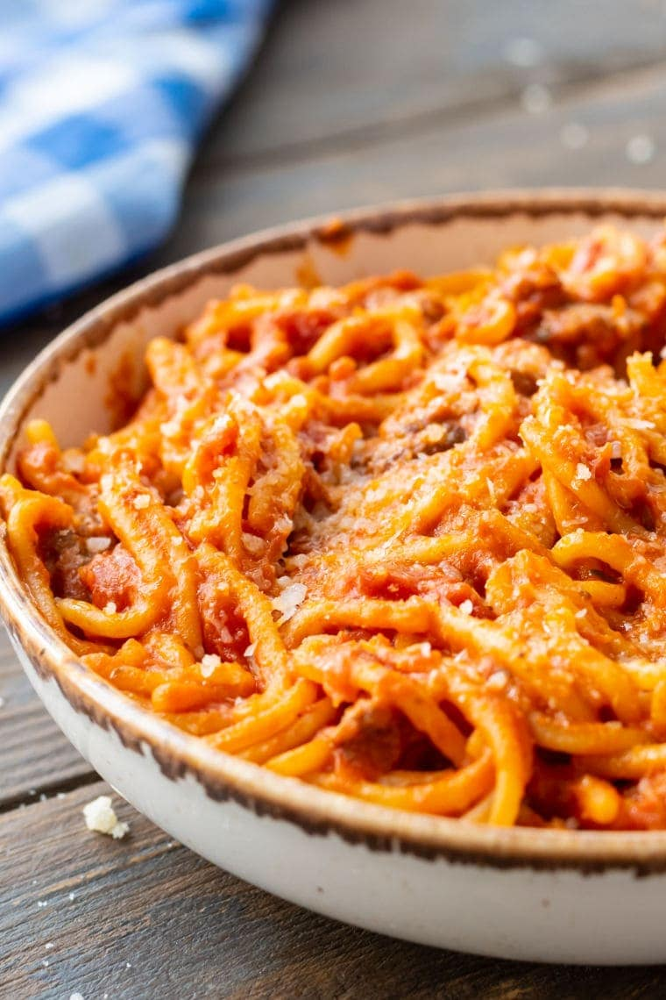

Spicy Spaghetti

Uncle Bubba's spin on the classic dish, Also one of the first things he learned to cook.
Ingredients
- 1 lb of Thick Spaghetti Noodles(Fettuccine works fine also)
- 1 lb of Hot Sausage
- 45 oz jar of your prefered Spaghetti Sauce
- 1 tbsp of Red Pepper Flakes
- 1/2 tsp of Cayenne Pepper
- 1/2 tsp of Paprika
- 1 tsp of Oregano
- 1/4 tsp of Rosemary
- 1 tbsp of Black Pepper
- 1/4 tsp of Basil
Steps
- Get a large pot of water boiling, add small sprinkle to it.
- While waiting on the water begin browning the sausage.
- Once the water is boiling, add the noodles to it and let it cook according to package instructions.(usually 13 minutes)
- Once the sausage is browned and cooked all the way through, drain it of oil and it to a sauce pot with the spaghetti sauce.
- Heat the sauce over a medium heat to simmering, add all the spices to the sauce at this point. Stir it occasionally, the sauce
will be done when it's a slightly runny might take a couple minutes past when the noodles are done. If so just drain the noodles while waiting.